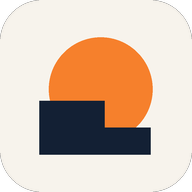

Política de privacidad
En resumen: Clinómetro Solar no tiene cuentas de usuario, servidores propios, publicidad ni herramientas de análisis. Todo lo que se mide y se guarda queda en el propio dispositivo. Solo se conecta a servicios externos cuando se usa una función que los necesita (producción con PVGIS, relieve del terreno, mapa y buscador), y en ese caso envía únicamente lo imprescindible para obtener el resultado.
Responsable
La app la desarrolla y publica Bruma Labs (Roberto Chávez Trujillo, España). Para cualquier consulta sobre privacidad puede escribir a bruma.labs@gmail.com.
Datos que guarda la app
La app guarda en el almacenamiento interno del dispositivo:
- Los proyectos y sus puntos medidos (azimut, elevación, notas, distancias y fecha).
- La ubicación de cada proyecto (latitud, longitud y declinación magnética), obtenida con el GPS, elegida en el mapa o escrita a mano.
- Las fotos de los puntos, si esa opción está activada.
- Los ajustes de la app y, si se descarga, el perfil del relieve del terreno de cada proyecto.
Estos datos no se envían al desarrollador ni a nadie más. Se pueden borrar desde la propia app (eliminando puntos o proyectos) y se eliminan por completo al desinstalarla.
Permisos
- Cámara: muestra el visor para apuntar a los obstáculos y, si se activa, guarda una foto de cada punto en el dispositivo. Las imágenes no salen del teléfono salvo que se compartan expresamente.
- Ubicación: se usa solo cuando se pulsa «Usar GPS» o al comprobar si se mide lejos de la ubicación del proyecto, para obtener la latitud, la longitud y la declinación magnética. No se usa en segundo plano.
- Sensores de movimiento y brújula: se leen en el dispositivo para calcular la orientación del móvil. No se guardan ni se envían.
- Vibración: confirma cada medida.
Servicios externos
Algunas funciones necesitan conexión a internet. Solo se usan cuando se activa la función correspondiente, y la conexión va cifrada (HTTPS). Como en cualquier conexión a internet, estos servicios reciben la dirección IP del dispositivo.
- PVGIS (Centro Común de Investigación de la Comisión Europea): para el relieve del terreno y la estimación de producción recibe las coordenadas del proyecto, la inclinación y orientación de los módulos, la potencia y el perfil del horizonte. Declaración de privacidad de PVGIS.
- Mapa: al elegir la ubicación en el mapa se descargan imágenes de OpenStreetMap, Esri y el Instituto Geográfico Nacional (PNOA), que reciben la zona visible del mapa. Privacidad de OpenStreetMap, privacidad de Esri, aviso legal del IGN.
- Buscador del mapa (Nominatim, de OpenStreetMap): recibe el texto que se escribe en el buscador.
Ninguno de estos servicios recibe datos que identifiquen a la persona usuaria, como nombre, correo o identificadores del dispositivo.
Exportar y compartir
El informe PDF, el archivo CSV y la copia de seguridad se generan en el dispositivo. Solo salen de él si se comparten o se guardan en otro lugar, y en ese caso se aplican las condiciones de la app o servicio elegido.
Menores
La app no recoge datos personales de ninguna persona, tampoco de menores. Puede usarse en centros educativos sin necesidad de crear cuentas.
Cambios en esta política
Si la app cambia la forma de tratar los datos, se actualizará esta página y la fecha de revisión.